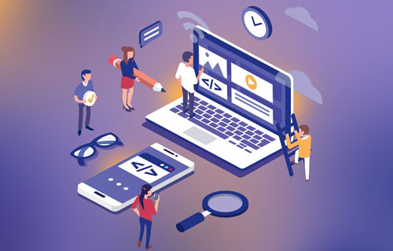

Technology-Driven Education
Technology-driven education is transforming
the way knowledge is delivered and consumed
by integrating digital tools into learning
environments. From interactive platforms
and virtual classrooms to AI-powered learning
systems, technology enables more engaging,
flexible, and accessible education for
students and professionals alike.
Our solutions focus on creating dynamic
learning experiences through smart content
delivery, real-time collaboration, and
personalized learning paths. By leveraging
data analytics and automation, we help
educators track progress, improve outcomes,
and adapt teaching methods to individual
learner needs.
With a strong emphasis on scalability, accessibility,
and innovation, we empower institutions and
organizations to deliver high-quality education
anytime, anywhere. Our approach ensures efficient
knowledge transfer, improved engagement, and
better learning outcomes in an increasingly
digital world.
E-Learning Platforms
We design and develop advanced e-learning platforms that deliver rich, interactive, and flexible learning experiences. Our solutions support multimedia content such as videos, quizzes, and assessments, enabling engaging and self-paced learning journeys. With mobile compatibility and cloud-based access, learners can access content anytime, anywhere, while educators can easily update and manage course materials to ensure relevance and quality.
Learning Management Systems (LMS)
We provide comprehensive LMS solutions that streamline course management, content delivery, and administrative tasks. Our platforms allow institutions to organize courses, assign tasks, track attendance, and manage certifications efficiently. With user-friendly dashboards and role-based access, both educators and learners benefit from a structured and personalized learning experience.
Mobile Learning Solutions
We develop advanced mobile learning solutions that enable seamless access to educational content across smartphones and tablets. Our platforms are designed with responsive interfaces and app-based functionality, allowing learners to study anytime, anywhere without limitations. By supporting offline access, push notifications, and interactive modules, we ensure continuous engagement and convenience in today’s fast-paced digital environment.
Personalized Learning Experience
Our solutions deliver personalized learning experiences by adapting content and learning paths based on individual performance, preferences, and progress. Using data-driven insights and intelligent algorithms, we help learners focus on areas that need improvement while advancing at their own pace. This approach increases engagement, retention, and overall learning effectiveness.



Seamless Learning Experience
Our solutions focus on user-friendly design, consistent performance, and easy navigation to enhance learner satisfaction.
User-Centric Design
We prioritize intuitive and user-friendly interfaces that make learning platforms easy to navigate for all users. By focusing on clean layouts, simple workflows, and accessibility, we ensure learners can focus on content without technical distractions. This approach enhances usability and creates a more engaging and comfortable learning environment.
Cross-Platform Accessibility
Our solutions are designed to work seamlessly across desktops, tablets, and mobile devices. Learners can switch between devices without losing progress, ensuring continuous learning anytime, anywhere. This flexibility supports modern learning habits and improves accessibility for diverse user groups.
Consistent Performance & Reliability
We ensure high system performance with minimal downtime, fast loading speeds, and stable functionality. Our platforms are optimized to handle multiple users and large volumes of content efficiently, providing a smooth and uninterrupted learning experience even during peak usage.
Integrated Learning Environment
We create unified platforms that integrate content delivery, communication tools, and progress tracking in one place. This eliminates the need for multiple systems and ensures a cohesive learning journey. By bringing everything together, we enhance efficiency and simplify the overall learning process.